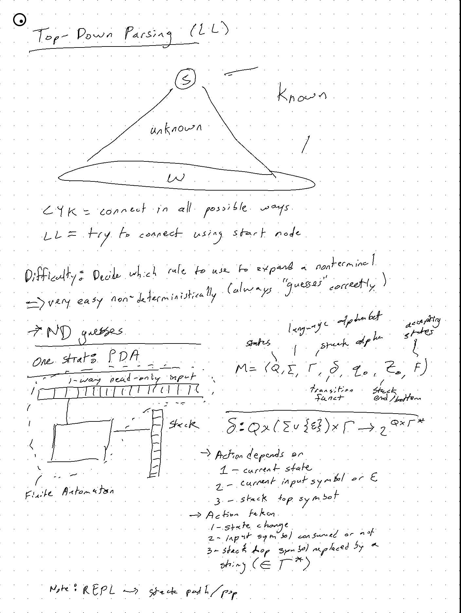
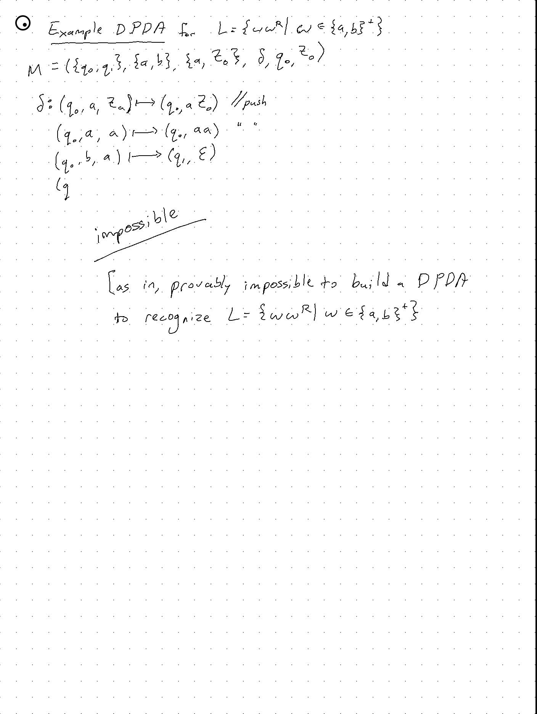
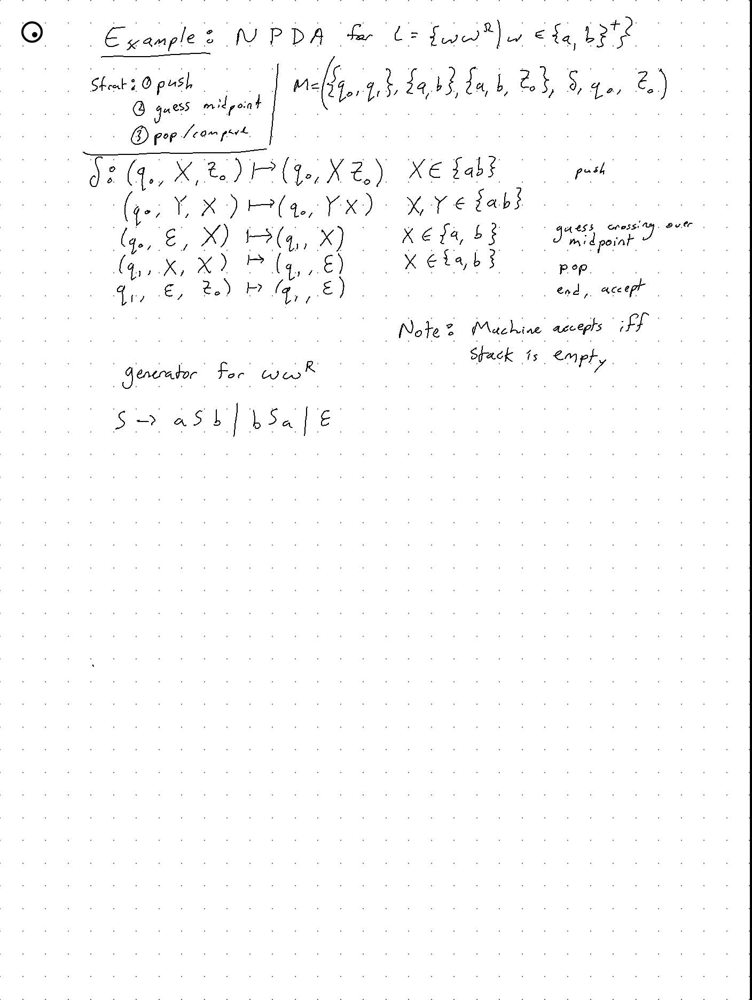

Created Thursday 30 January 2020
Two types: top down, bottom up
Top Down Parsing
Syntax analyzer does the majority syntax checking
Example:
L = { anbn | n >= 0 }
has the pattern aa...bb
It is context-free but not regular, so it cannot be recognized by a DFA
- The language of all nested parentheses (or begin-ends) is not regular and therefore not context free
- Therefore, this pattern cannot be checked y the scanner and can be only done by the parser
Similarly, some language features cannot be described by context-free rules, so they cannot be checked by the parser, but can be done by the next level of the compiler (semantic analyzer)
Example:
L = { wzw | w ∈ {a,b}*, ie the language feature that identifies must be declared before use is not context free but is context-sensitive }
- checked by semantic analyzer
Parse Trees and Derivations
Example:
E -> E + E | E * E | <id>
Derivations:
E => E + E => E * E +
=> <id> * <id> + E
=> <id> * <id> + <id>
Begin = start symbol
Intermediate = sentential forms
Last form = sentence (only terminals)
Sequence = derivation
Can subscript the arrows to indicate that it is a left-most derivation
=>lm
Given a derivation, there exist exactly one tree
Given a tree, there are many possible derivations that generate that tree
Top down = left most
Bottom up = right most
Ambiguity
Def:
A CFG is ambiguous if there are multple parse trees for some terminal string.
CFG ambiguity is undecidable
Strategy:
For specific CFG, write everything you can as a right-linear grammar, then it's easy to analyze the few rules that can't be expressed this way.
If it is right-linear, it's not ambiguous (?? - not sure about this)
Generally, you can transform most things from an ambiguous set of rules to a non-ambiguous set of rules
Disambiguation
EG: * > + (multiplication has a higher priority than multiplication)
E -> E + T | T
T -> T * F | F
F -> <id>
Now, it's non-ambiguous
keywords: begin, if, int
identifiers: seq of english chars
constants: seq of digits (possibly including decimal)
special symbols: : , =
Deterministic Parsing
There are two well-known "Universal Context-Free" deterministic parsing methods
- CYK (Cocke-Younger-Kasami) or Earley's algoritm
- Can handle any CFL in O(n^3) time
- Top-Down (LL) and Bottom-Up (LR) parsing algorithms
- can handle large subclasses of CFLs in O(n) time
CYK - O(n^3)
Given a CFG G = (N, Σ, P, S) in CNF, and an input string w ∈ Σ* , decide if w ∈ L(G)
Note: in CNF (Chomsky Normal Form), each rule either maps to a single terminal or two non-terminals, which means that the parse tree is always binary (!)
Work bottom-up - every terminal symbol MUST come from a terminal symbol, so consider all possible ways to generate a symbol, eg:
A -> c
B -> c
and combine them in all possible ways

Time: O(n2 * n * |N|2) = O(n3)
|N| = length of N rules?
Top-Down Parsing - O(n)
Given a CFG G and a string W, construct a parse tree for w in G top-down, ie start with the start symbol of G and EXPAND nonterminals in order to generate w.
EXPAND:
Given any non-terminal A, choose one of it's productions to expand and follow it.
How do we determine which one to expand?

DPDA

NPDA

Algorithm
Given a CFG G = (N, Σ, P, S), we construct a PDA M such that L(M) = L(G)
For any input w ∈ Σ*, M will simulate a leftmost derivation for w in G and accept w iff w ∈ L(G)
Strategy:
- Push S into stack
- Can the stack content (S) turn into the unscanned portion of the input (w)?
If the top symbol is a terminal, then verify that it is equal to the input symbol and if so, then pop it and consume the input symbol
Repeat this if new stack top is a terminal

Parse tree has been completed (and M accepts) if there is nothing to be verified (ie, M reached the end of the input tape with empty stack)
PDA Example:
Observe that:
1) M simulates a LM derivation, to construct the parse tree top-down
2) Action depends on the type of symbol at the top of the stack
- nonterminal = action may be nondeterministic (if multiple productions)
- This is the only source of non-determinism
We remove this non-determinimism via examining a subclass of CFGs that can be parsed top-down in O(n) time:
LL(k) Grammars
A proper subclass of CFGs that permit a deterministic, no-backtracking, top down construction of a parse tree in O(n) time by using:
- Left-to-right scan of input symbols
- Leftmost derivation
- k lookahead symbols
This is how top-down parsing works.
It's a proper subclass, so:
LL = ∪ LL(k)
LL(0) ⊆ LL(1) ⊆ LL(2) ⊆ .... ⊆ LL
Basically, by giving up universal parsing (by only accepting a subset of CFGs), we can improve the time complexity from O(n^3) to O(n)
Then, perform some test to determine if the grammar is LL(0), LL(1) ... LL(k) for some reasonable k (eg < 20 or something) until the grammar is LL(k) for some small k, or we stop, change the grammar, and try again.
Definition
Let k ≥ 0 and Β ∈ (N ∪ Σ)*
Define:
FIRSTk (Β) = {x ∈ Σ* | Β => xΒ' and |x| = k, or
Example
Example 2
A more complicated example:
Bottom-Up Parsing
LR(k) Grammars
{kind=link}
{kind=link}
{kind=link}
{kind=link}
{kind=link}
{kind=link}
{kind=link}
{kind=link}
{kind=link}
{kind=link}
{kind=link}
{kind=link}
{kind=link}